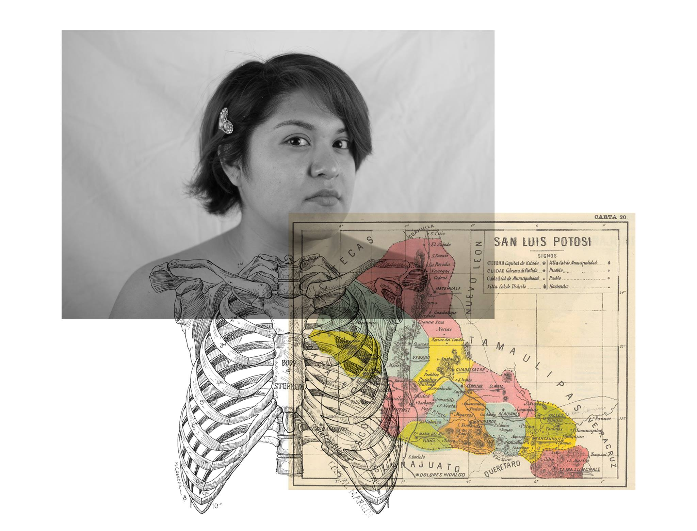

WEATHERED DREAMS
June 2018
Saturday, June 30, 2018 6:00 PM 18:00 Sunday, July 15, 2018 4:00 PM 16:00
Weathered Dreams
Opening on Saturday, June 30th from 6-9 PM Exhibition on view until July 15th.
Little Berlin is pleased to present an exhibition of works by Alejandra Zavala, Graciela Vasquez and Candy Alexandra González entitled “Weathered Dreams”. This group of artists explores issues of intersectional identity and migration through illustration, mixed media and installation artwork. At a time when social media has made ICE raids, deportations and the incarceration of immigrants available for consumption, it is critical to uplift the works of artists who are directly impacted by anti-immigrant policies. Weathered Dreams was curated by Candy Alexandra with the intention of centering young, Latinx, people of color, immigrant/children of immigrant narratives. Each of the artist’s pieces will be exhibited alongside zines from the Little Berlin zine collection that are in direct conversation with the core themes of the exhibition.
The opening for Weathered Dreams is being organized in collaboration with Juntos, a community-led, Latinx immigrant organization based in South Philadelphia. The opening event will provide attendees the opportunity to learn more about Juntos’ initiatives and ways to better support Philadelphia’s immigrant communities.
~Alejandra Zavala’s passion for art started at a young age. She is inspired by the colorful surroundings of her childhood in Mexico--from her abuelita's apron and beautiful garden of exotic flowers, to the altar they built together every Día de los Muertos (Day of the Dead) and the fruit stands her family ate from daily. Alejandra’s artwork is rooted in the heartbreak of leaving her homeland, a blending of cultures and the comfort of new friendships.
Alejandra is a Lancaster based artist. She received her BA from Franklin & Marshall College in 2016.
~Graciela Vasquez (Chelitasdesign) is a Latinx artist/activist who dedicates their time to representing their family's history through art. After their father was deported to his home country in 2006, Graciela focused their art on their Latinx heritage, immigrant’s rights and religious influences. Graciela hopes that sharing their experiences through their artwork will impact those who see themselves reflected in the work.
Graciela is a first generation college graduate and received their BFA from Moore College of Art & Design in May 2018.
~Candy Alexandra González is a Latinx papermaker, printmaker, book artist and young poet from Miami, FL. In their visual and written work, Candy Alexandra centers the narratives of Latinx immigrants and captures the essence of their own experiences as a first generation Latinx immigrant in the United States.
Candy Alexandra received their BA in Romance Languages and Literature from Mount Holyoke College in 2014 and their MFA in Book Arts and Printmaking from The University of the Arts in 2017.
The Annex at Little Berlin 2430 Coral St. Philadelphia, PA 19125
In addition, Please join us for the closing reception of HICKEY, including works by Max Adrian, Kyle Vu-Dunn, Stephen Grebinski, Paul Peng, Curtis Welteroth and Justin Woody. The exhibition is curated by Fred Blauth and Eric Anthony Berdis.
HICKEY irreverently presents tales of intimacy and identity through the works of six queer men. By using traditional mediums such as paint, paper, pencil and fiber, then subverting their applications, the artists in the exhibition simultaneously make light of and shine light on, the absurdities of finding one’s self and then sharing with another.
Aphrodisiacs have been sculpted from paper. Furries search for love. Dream homes become haunted houses. Floor to ceiling tapestries have been woven from hair. Voodoo dolls become dog toys. Beauty hurts. In an age where hetero normative social standards have begun to slip back into the LGBTQIA+ community, the artists in HICKEY stand by the strangeness that accompanies queerness.
The Gallery at Little Berlin 2430 Coral St. Philadelphia, PA 19125
